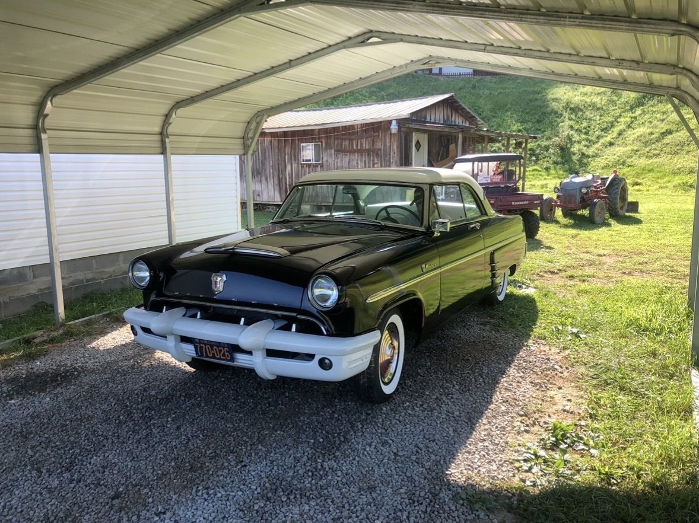
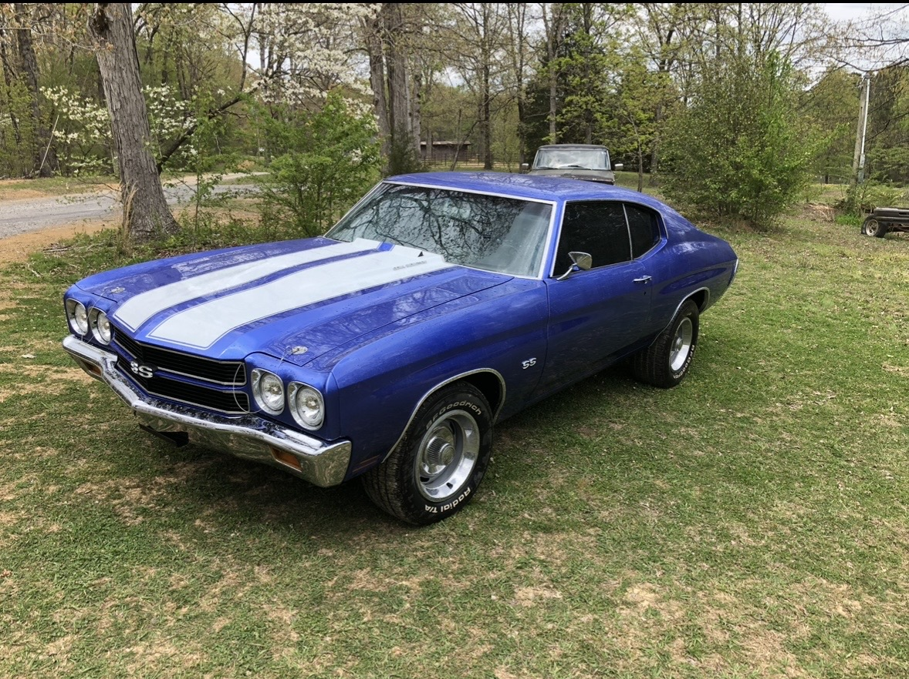
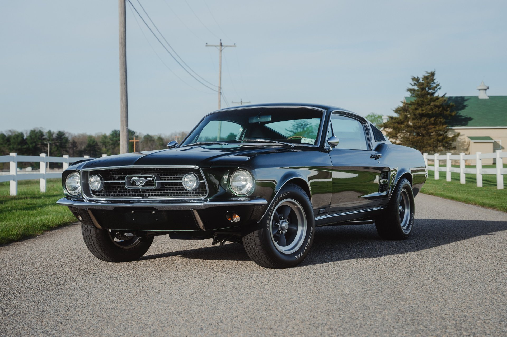
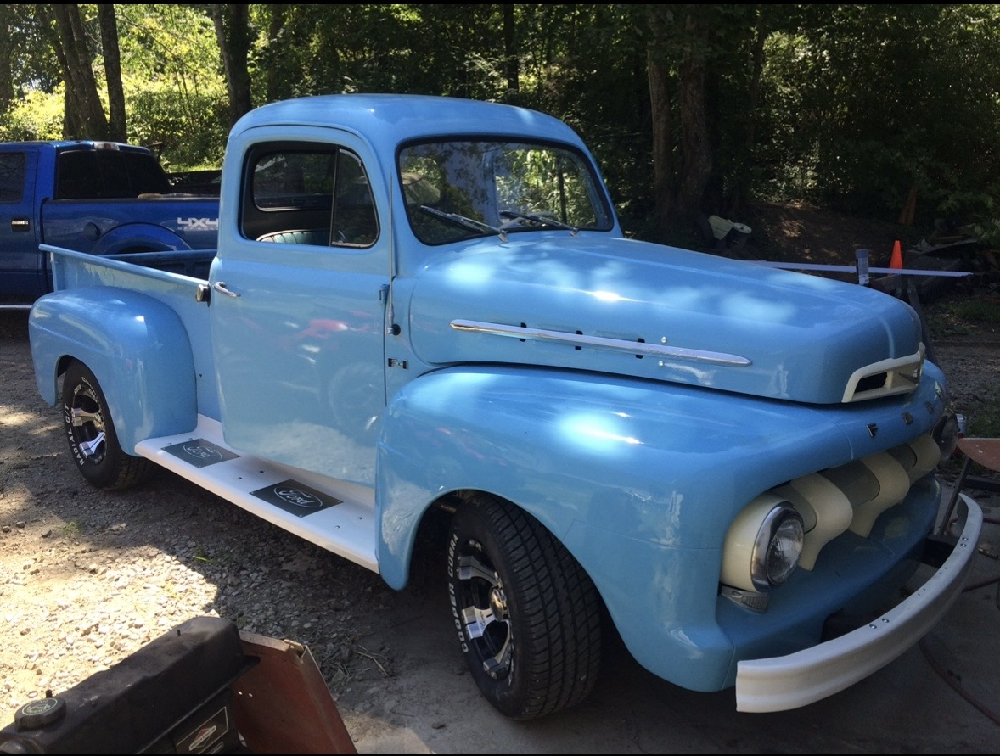
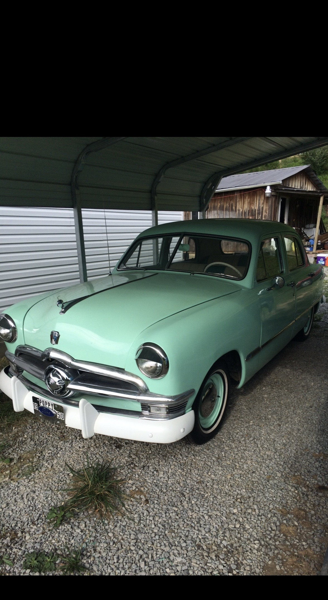
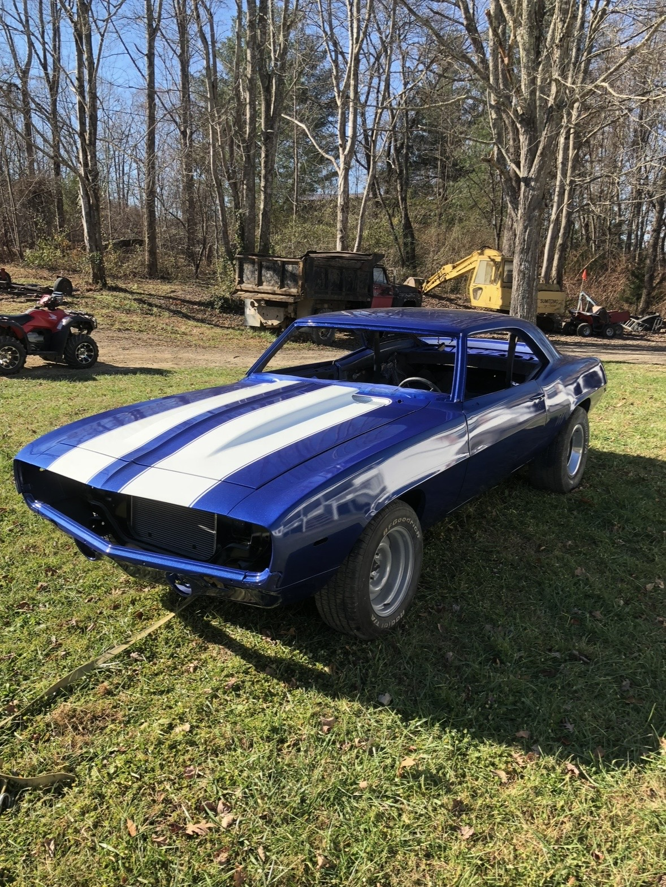

After Cars Gallery
These vehicles show their condition after their restoration.
What Does It Mean to Restore a Car?
Restoring a car means taking responsibility for bringing a worn, damaged, or aging vehicle back to its former glory. For the person doing the restoration, this involves inspecting the car, repairing or replacing parts, fixing mechanical issues, refinishing the body, repainting, and rebuilding components to match the car’s original condition or better. It requires patience, skill, and a commitment to preserving automotive history.





